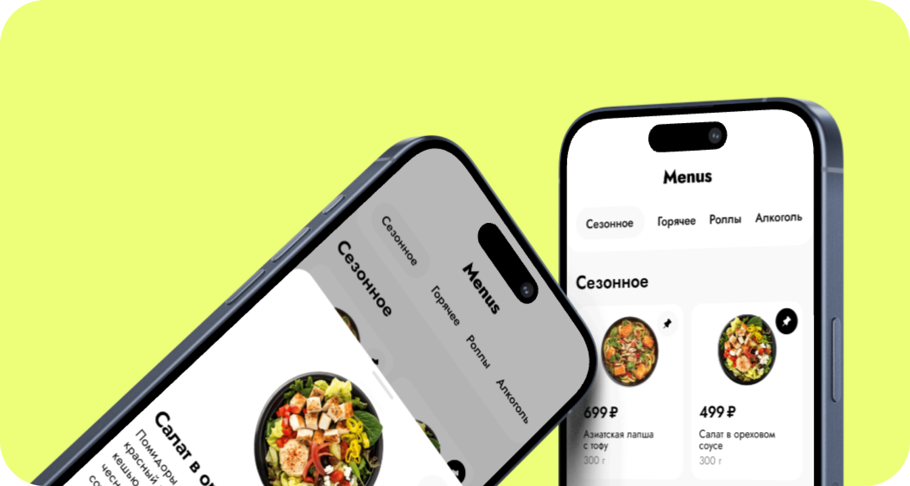
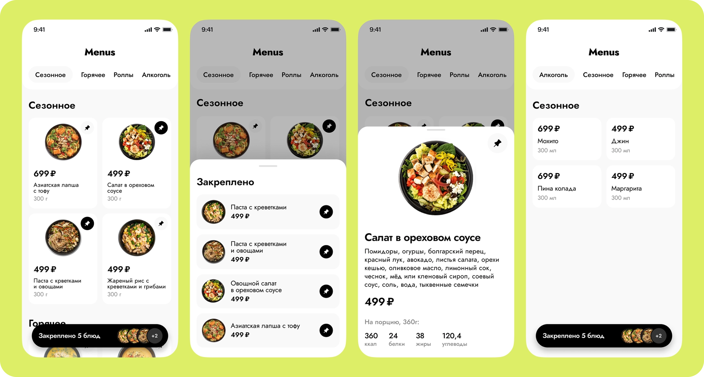
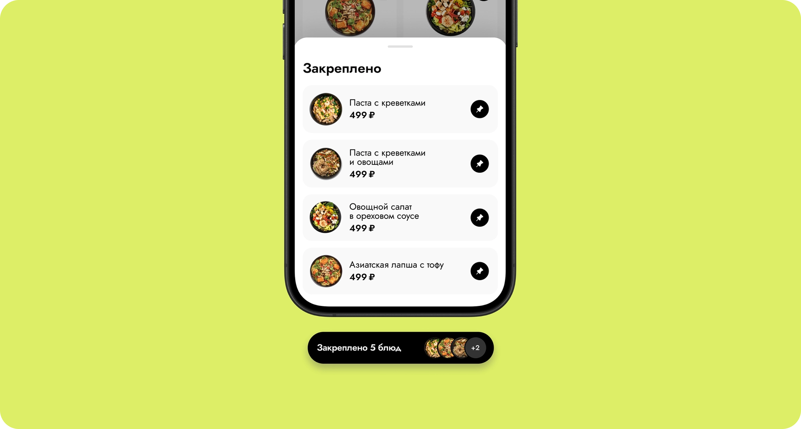
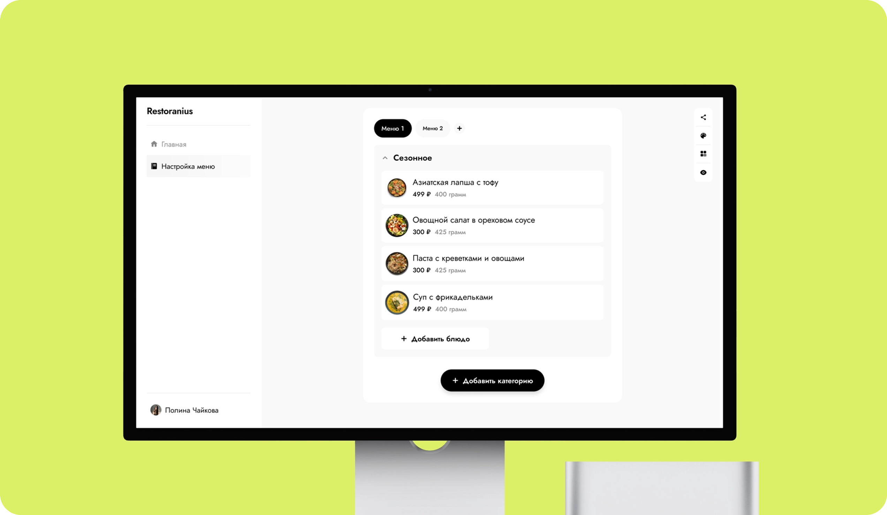
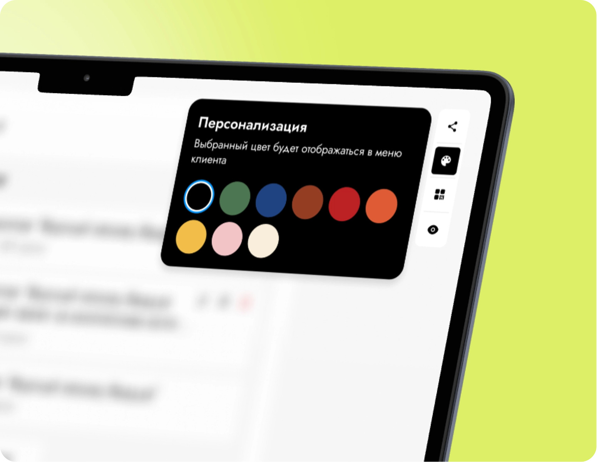
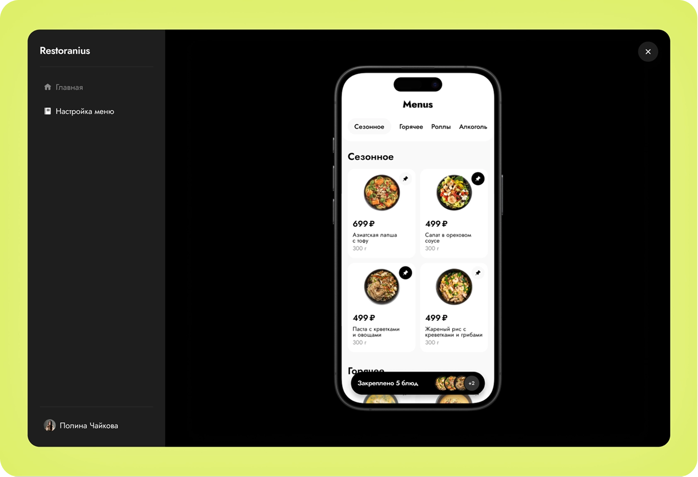
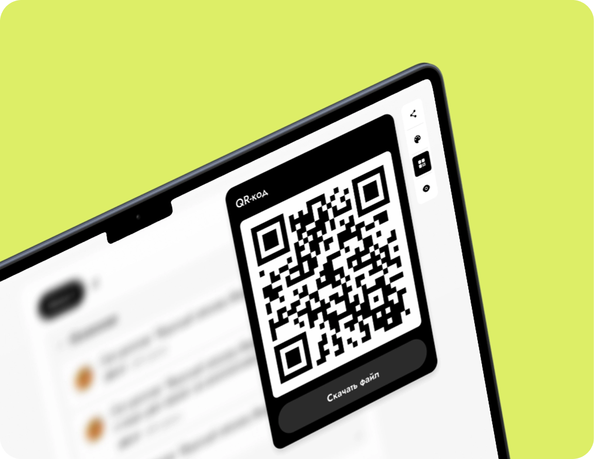

Автоматизация
QR-меню и админка сократят затраты бизнеса на актуализацию меню

Menus — pet-проект, который мы запустили с другом-разработчиком и развили в SaaS-решение для ресторанов. Сейчас его используют несколько заведений в Туле для замены бумажных меню
Изучила конкурентов, открытые источники и сценарии использования меню в ресторане. Это помогло выделить основные проблемы бумажного формата
Проблемы пользователя:
Проблемы бизнеса:
Для ресторанов цифровое меню — это способ одновременно сократить издержки и улучшить сервис. По данным Square Future of Restaurants 2021, 88% ресторанов рассматривают переход на цифровые меню, а 47% тех, кто уже использует URL/QR, готовы полностью отказаться от бумажных. Исследование Sustainability на выборке 508 гостей full-service ресторанов показывает, что QR-меню положительно влияет на качество сервиса и удовлетворенность, потому что сокращает ожидание и упрощает выбор. При этом пользовательские исследования подчеркивают: ценность дает не сам QR-код, а удобный цифровой сценарий
Square, Future of Restaurants 2021
Restaurant Consumers' Opinions on The Digital Menu Experience
QR-меню и админка сократят затраты бизнеса на актуализацию меню
Цифровой сценарий ускорит обслуживание и упростит выбор для гостей
Можно заранее отметить позиции и быстро открыть их, когда подойдет официант
Спроектировали сервис с QR-меню и админкой для управления меню. Решение помогает бизнесу снижать затраты, упрощает выбор для гостей и освобождает официантов от рутинной работы с бумажными меню

Владелец ресторана оформляет подписку и получает доступ к админке для управления меню. Внутри он может актуализировать позиции, цены, категории и оформление, а также генерировать QR-код для зала. Гость сканирует код и открывает цифровое меню, в котором легко ориентироваться по категориям, изучать блюда и быстро возвращаться к выбранным позициям

Спроектировали административную панель для управления меню, обновления данных, персонализации интерфейса, генерации QR-кода и настройки ролей в команде.

Доступ к редактированию сервиса под свой бизнес, выбор цвета, формируем уникальное предложение

Как у пользователя на смартфоне, чтобы админы не переживали, как это будет выглядеть у клиента. Свежим взглядом можно увидеть неточности и исправить их

Генерируется автоматически после создания меню. Файл можно скачать и использовать в соцсетях, распечатать и разместить на столики

Сервис уже запущен и работает в нескольких ресторанах Тулы. Мы собираем обратную связь от бизнеса и гостей, чтобы проверять гипотезы, развивать сценарии и делать цифровое меню удобнее для пользователей и полезнее для ресторанов